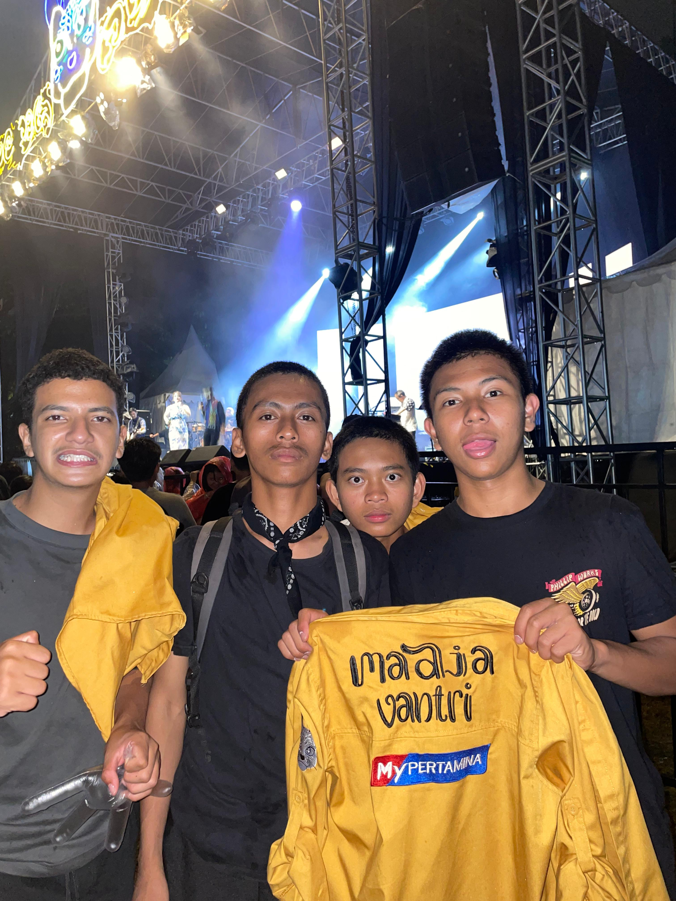

Festival Budaya SMAN 3 Bandung
SMA Negeri 3 Bandung kembali bersiap mengadakan kegiatan tahunan yang paling dinantikan, yaitu Festival Budaya 2025. Acara ini rencananya akan berlangsung pada pertengahan bulan Oktober dan terbuka untuk seluruh warga tiga.
Festival merupakan sarana komunikasi yang penting untuk membangun, memberdayakan, dan pengakuan suatu identitas budaya. Karenanya, sebagai sebuah sarana komunikasi, maka sudah selayaknya sebuah event festival direncanakan melalui proses perencanaan strategis komunikasi agar dapat berjalan dengan efektif.
Komunikasi merupakan sarana untuk mensosialisasikan nilai-nilai budaya kepada masyarakatnya. Komunikasi dapat menjadi sarana transmisi budaya dari satu generasi ke generasi berikutnya. Komunikasi menciptakan, atau membuat segala kebimbangan menjadi lebih pasti, dan bagaimanapun juga ‘budaya’ suatu kelompok dalam masyarakat menjadi ada dan terus ada karena mereka memiliki sejarah dan tradisi yang panjang yang diturunkan dari satu generasi ke generasi lainnya.
dengan adanya fesbud menjadi para murid mencintai kebudayaan negara sendiri dan tidak terbawa oleh ke barat baratan dan melestarikan kebudayaan negara indonesia yang indah Kembali